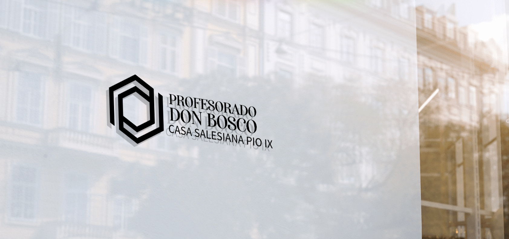

Formando hoy a los profesionales Salesianos del mañana
Títulos oficiales • Modalidad Híbrida • Tutorías • Prácticas Profesionalizantes • Orientación en Inserción al Mercado Laboral
Contactanos
Títulos oficiales • Modalidad Híbrida • Tutorías • Prácticas Profesionalizantes • Orientación en Inserción al Mercado Laboral
Contactanos

Descifrá el futuro digital. Diseñá soluciones ingeniosas. El puente entre problemas y tecnología.
Información
Explorá misterios ancestrales y adquirí conocimiento profundo. Un viaje espiritual hacia la trascendencia y la verdad.
InformaciónCreá mundos visuales. Dirigí historias impactantes. Magia en cada fotograma.
InformaciónLa voz que encanta. Contá historias, vendé sueños. El arte de comunicar con pasión y persuasión.
InformaciónNuestros planes de estudios incluyen materias anuales y cuatrimestrales, algunas de promoción directa y otras con examen final.
Actualmente sostenemos un sistema bimodal de cursada, alternando semanas de clases presenciales y virtuales.
El primer paso es realizar la correspondiente inscripción online en este link. Luego, presentar en secretaría la siguiente documentación los días MARTES y JUEVES en el horario de 18.00 hs a 20.30 hs: DNI (original y fotocopia), Título y/o Certificado Analítico del Nivel Secundario debidamente legalizado (original y fotocopia) y 02 (dos) fotos carnet. Además, si correspondiera, se concertará una entrevista con el vicerrector y/o coordinador del área correspondiente.
¡Ya está abierta la inscripción para el primer cuatrimestre del Ciclo Lectivo 2024!
"En el Profesorado Don Bosco, el Análisis de Sistemas es más que código; es descifrar el futuro digital con pasión y precisión. Cada clase es un avance hacia la excelencia técnica."
"Estudiar Locución en el Profesorado Don Bosco es sumergirse en el arte de la comunicación. Cada voz cuenta una historia única."
"La carrera de Producción de Televisión y Audiovisuales en el Profesorado Don Bosco hace realidad sueños visuales. Cada proyecto es una obra maestra en progreso."
"La carrera de Análisis de Sistemas en el Profesorado Don Bosco ha sido clave para mi desarrollo técnico. Cada clase es un paso más hacia la innovación."
"En el Profesorado Don Bosco, las Ciencias Sagradas cobran vida. Un viaje espiritual profundo, guiado por maestros apasionados."